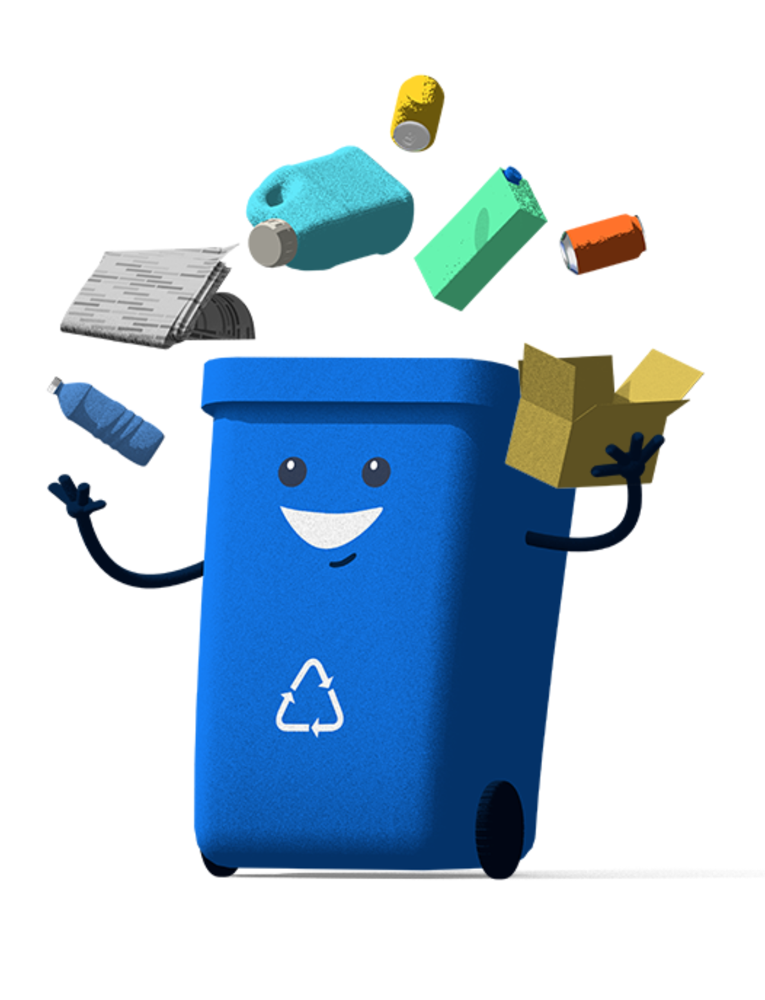

Are you having trouble figuring out which item is best to recycle or throw away? Answer a few short questions to find out!
Get StartedThe following code has been developed by students and/or researchers of the Freshman Research Initiative DIY Diagnostics Stream at The University of Texas at Austin. This code is shared for demonstration purposes and should not be considered a product -- it is for entertainment purposes only. Any user of this code does so at their own risk. Members of the DIY Stream, FRI, and The University of Texas system are not liable for anything related to this code.
THIS CODE SHOULD NOT BE USED TO DETERMINE WHAT IS RECYCLABLE AND TRASH.
